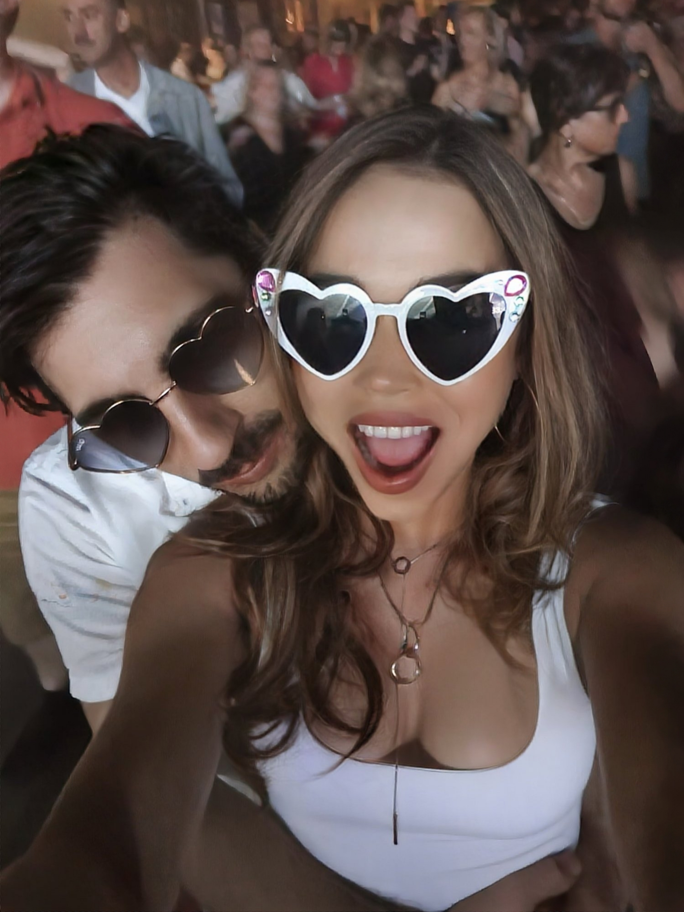
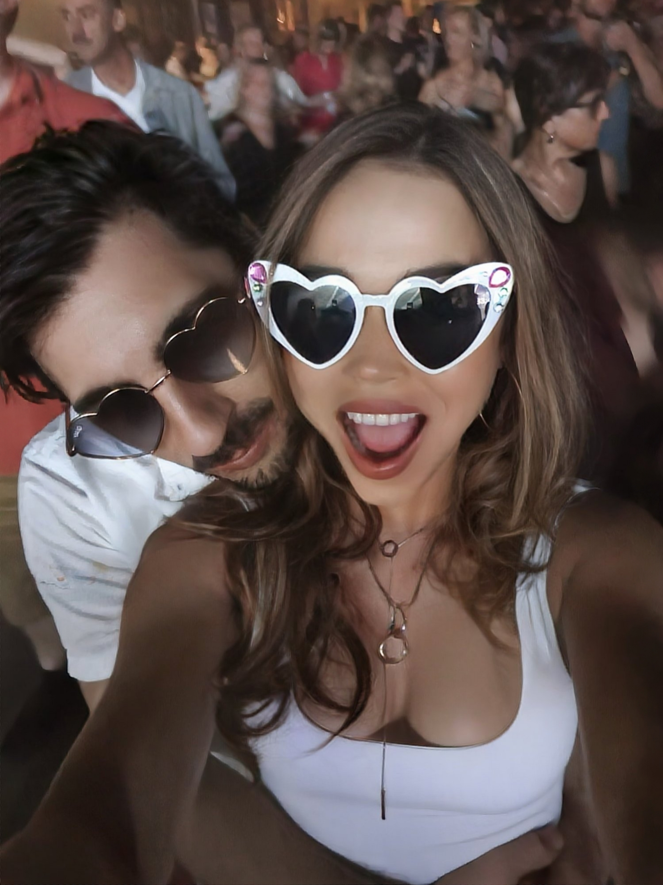
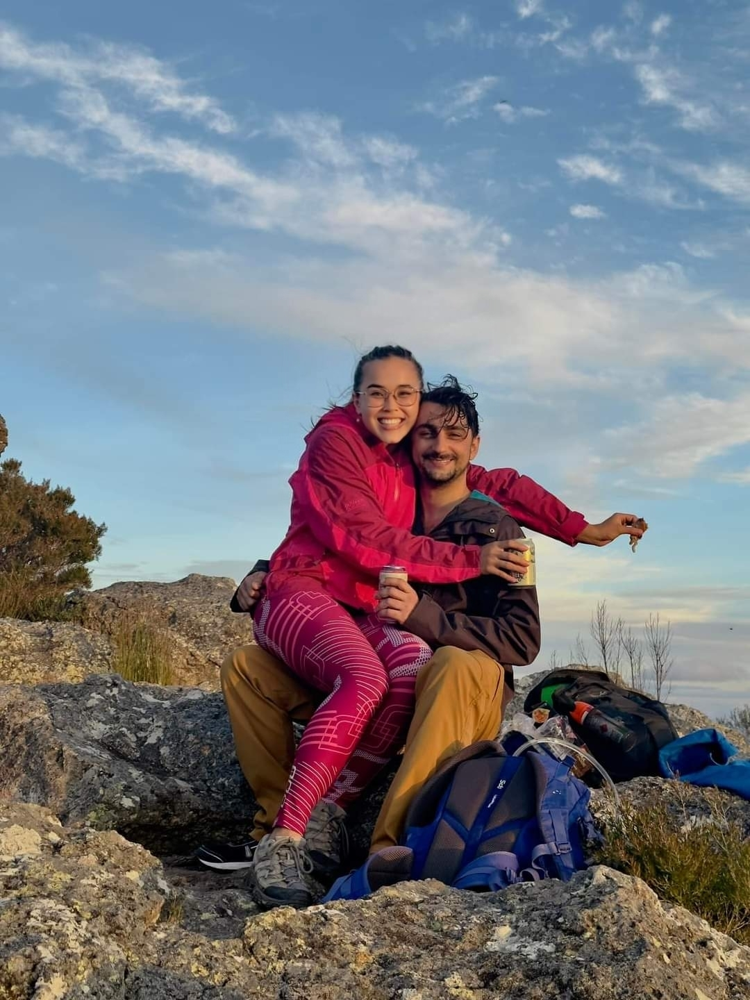
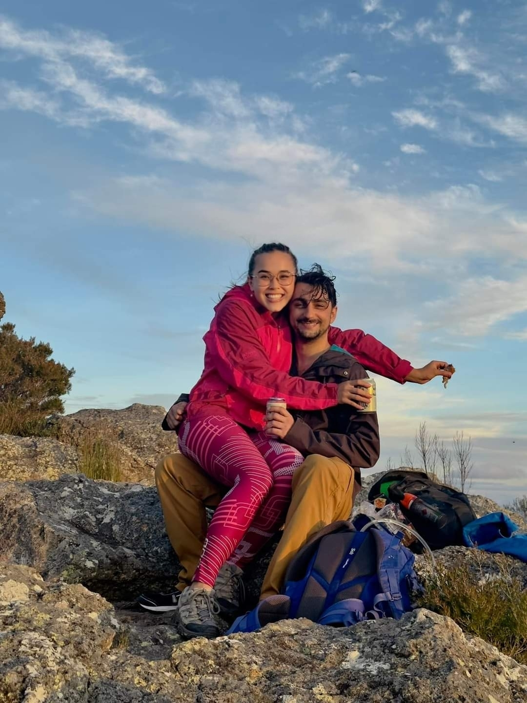

 



How We Met
Once upon a beach…
We moved in the same circles for years. Same events. Same adventures. Shared friends. And yet somehow, we never met. Not once.
You’d think fate would’ve thrown us together at a hiking adventure, a climbing event, or a barbecue. But no. It waited. Quietly. Patiently. Watching us orbit each other like the two celestials under the same sky.
Until one day, on a 4x4 trip to Moreton Island — salt in the air, sand under our wheels — we finally collided. We didn’t know it then, but that moment would mark the last day we were strangers. It wasn’t love at first sight. It was something quieter. Slower. Like a tide rolling in. Not in a dramatic, slow-motion way. Just a quiet, curious moment that changed everything.
There was laughter. There was a connection. There was something neither of us could quite explain—something warm and calm and familiar, like finding a piece of home you didn’t know you were missing. That trip became the prologue to everything.
The Proposal
High above the world, love found its voice.
Fast forward to Japan. Snow falling gently. The summit of Maiko Ski Resort stretched out in panoramic silence. It was breathtaking. Timy had a plan, to propose at the top, surrounded by clouds and mountains. Romantic. Serene. Perfect.
Except… there was me—bundled head to toe in full ski gear, determined to look cool in the summit photos. Helmet on. Goggles on. Gloves secured. Hood cinched tight. I was fully committed to the ski aesthetic.
Timy, meanwhile, was gently—and repeatedly—trying to undress me. First, he tried to remove my gloves. I said, “No, my hands will freeze.” Then, he reached for my goggles. “Absolutely not, they look amazing.” Then the helmet. “Why do you want to ruin the photo?”
All he managed to successfully remove were my skis. (Which, in hindsight, was probably a safety precaution in case I panicked and skied away.) Still, despite the layers and the stubbornness, he got down on one knee—me looking like a cool snow trooper—and asked the question that changed everything.
I said yes. Helmet and all. And honestly? It was perfect. Us to a T — a little clumsy, very sincere, and completely unforgettable.
Why Sunset–Moonrise?
Because the in-between is where the magic lives.
Just like us orbiting and finally coming together, we have chosen one of the rare days where the sun and moon conjoin. We chose to be married at sunset—not because it's the end of something, but because it's the most beautiful transition the world offers. The golden hour when everything softens. The moment when light leans into shadow.
There’s also something quietly cosmic about it—a little nod to Timy’s quiet obsession with space. He’s always wanted the moon to be part of the wedding, and honestly… so did I.
And as the sun bows out, the moon quietly rises, mysterious, silver, and certain.
Our sunset marks the closing of two solo paths. Moonrise begins the journey of one shared life. This ceremony isn’t about a fairytale ending or a perfect beginning. It’s about honouring what brought us here and stepping into whatever comes next — moonlit, messy, and meaningful. It’s a rhythm, like our love—gentle, grounded, and full of wonder.
Baby Blip
Our littlest light in the moonlight.
Between the proposal and the wedding, life gave us our greatest adventure yet—our baby girl, Ilyssia. Fondly known as “Blip” during her journey to us, a small nickname for the tiny soul that made a big entrance.
She’s already stolen our sleep, our hearts, and the dance floor.
Having her in our arms as we say our vows feels like the final line of a chapter we never knew we were writing. She is the proof of our love’s becoming—part of our story, our ceremony, and our forever.